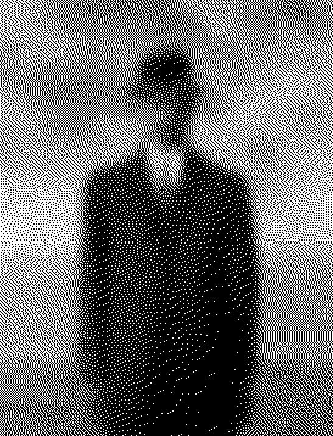
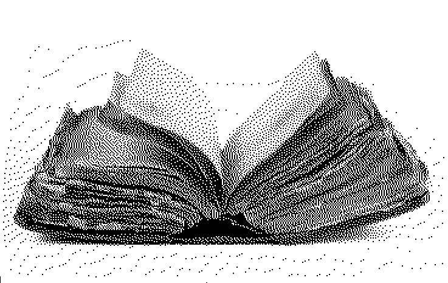
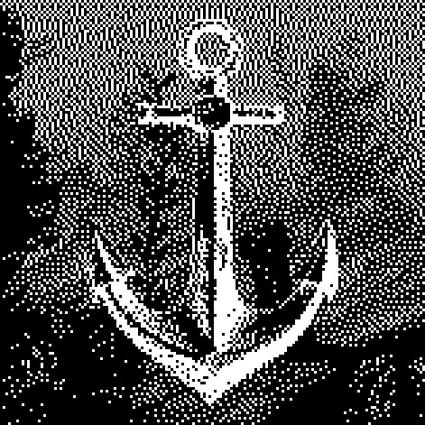
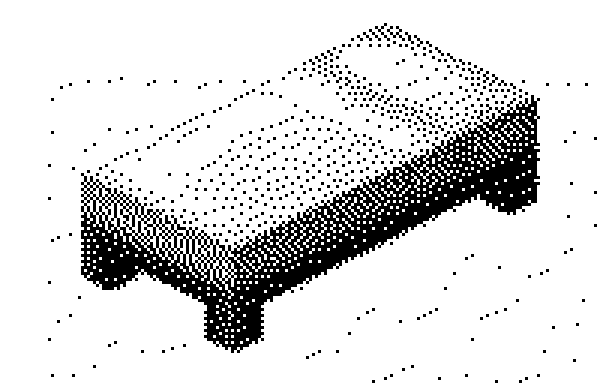
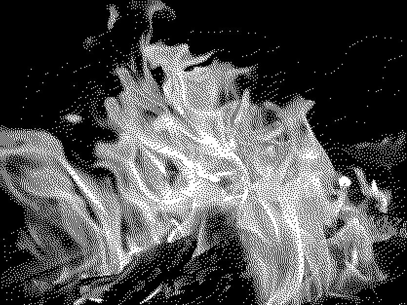
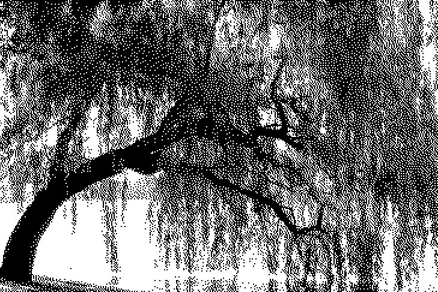

The line is made up of an infinite number of points; the plane of an infinite number of lines; the volume of an infinite number of planes; the hypervolume of an infinite number of volumes. No, unquestionably this is not — more geometrico — the best way of beginning my story. To claim that is it true is nowadays the convention of every made-up story. Mine, however, is true.
I live alone in a fourth-floor apartment on Belgrano Street, in Buenos Aires. Late one evening, a few months back, I heard a knock at my door. I opened it and a stranger stood there. He was a tall man, with nondescript features — or perhaps it was my myopia that made them seem that way. Dressed in gray and carrying a gray suitcase in his hand, he had an unassuming look about him. I saw at once that he was a foreigner. At first, he struck me as old; only later did I realize that I had been misled by his thin blond hair, which was, in a Scandinavian sort of way, almost white.

During the course of our conversation, which was not to last an hour, I found out that he came from the Orkneys. I invited him in, pointing to a chair. He paused awhile before speaking. A kind of gloom emanated from him — as it does now from me. "I sell Bibles," he said. Somewhat pedantically, I replied, "In this house are several English Bibles, including the first - John Wicliffe's. I also have Cipriano de Valera's, Luther's — which, from a literary viewpoint, is the worst — and a Latin copy of the Vulgate. As you see, it's not exactly Bibles I stand in need of."
After a few moments of silence, he said, "I don't only sell Bibles. I can show you a holy book I came across on the outskirts of Bikaner. It may interest you." He opened the suitcase and laid the book on a table. It was an octavo volume, bound in cloth. There was no doubt that it had passed through many hands. Examining it, I was surprised by its unusual weight. On the spine were the words "Holy Writ" and, below them, "Bombay." "Nineteenth century, probably," I remarked. "I don't know," he said. "I've never found out." I opened the book at random.

The script was strange to me. The pages, which were worn and typographically poor, were laid out in a double column, as in a Bible. The text was closely printed, and it was ordered in versicles. In the upper corners of the pages were Arabic numbers. I noticed that one left-hand page bore the number (let us say) 40,514 and the facing right-hand page 999. I turned the leaf; it was numbered with eight digits.
It also bore a small illustration, like the kind used in dictionaries — an anchor drawn with pen and ink, as if by a schoolboy's clumsy hand. It was at this point that the stranger said, "Look at the illustration closely. You'll never see it again." I noted my place and closed the book. At once, I reopened it. Page by page, in vain, I looked for the illustration of the anchor. "It seems to be a version of Scriptures in some Indian language, is it not?" I said to hide my dismay. "No," he replied. Then, as if confiding a secret, he lowered his voice.

"I acquired the book in a town out on the plain in exchange for a handful of rupees and a Bible. Its owner did not know how to read. I suspect that he saw the Book of Books as a talisman. He was of the lowest caste; nobody but other untouchables could tread his shadow without contamination. He told me his book was called the Book of Sand, because neither the book nor the sand has any beginning or end." The stranger asked me to find the first page. I laid my left hand on the cover and, trying to put my thumb on the flyleaf, I opened the book. It was useless. Every time I tried, a number of pages came between the cover and my thumb. It was as if they kept growing from the book. "Now find the last page." Again I failed. In a voice that was not mine, I barely managed to stammer, "This can't be."
Still speaking in a low voice, the stranger said, "It can't be, but it is. The number of pages in this book is no more or less than infinite. None is the first page, none the last. I don't know why they're numbered in this arbitrary way. Perhaps to suggest that the terms of an infinite series admit any number." Then, as if he were thinking aloud, he said, "If space is infinite, we may be at any point in space. If time is infinite, we may be at any point in time." His speculations irritated me.

"You are religious, no doubt?" I asked him. "Yes, I'm a Presbyterian. My conscience is clear. I am reasonably sure of not having cheated the native when I gave him the Word of God in exchange for his devilish book." I assured him that he had nothing to reproach himself for, and I asked if he were just passing through this part of the world. He replied that he planned to return to his country in a few days. It was then that I learned that he was a Scot from the Orkney Islands. I told him I had a great personal affection for Scotland, through my love of Stevenson and Hume. "You mean Stevenson and Robbie Burns," he corrected.
While we spoke, I kept exploring the infinite book. With feigned indifference, I asked, "Do you intend to offer this curiosity to the British Museum?" "No. I'm offering it to you," he said, and he stipulated a rather high sum for the book. I answered, in all truthfulness, that such a sum was out of my reach, and I began thinking. After a minute or two, I came up with a scheme. "I propose a swap," I said. "You got this book for a handful of rupees and a copy of the Bible. I'll offer you the amount of my pension check, which I've just collected, and my black-letter Wicliffe Bible. I inherited it from my ancestors." "A black-letter Wicliffe!" he murmured. I went to my bedroom and brought him the money and the book. He turned the leaves and studied the title page with all the fervor of a true bibliophile. "It's a deal," he said.
It amazed me that he did not haggle. Only later was I to realize that he had entered my house with his mind made up to sell the book. Without counting the money, he put it away. We talked about India, about Orkney, and about the Norwegian jarls who once ruled it.
It was night when the man left. I have not seen him again, nor do I know his name. I thought of keeping the Book of Sand in the space left on the shelf by the Wiclif, but in the end I decided to hide it behind the volumes of a broken set of The Thousand and One Nights. I went to bed and did not sleep. At three or four in the morning, I turned on the light. I got down the impossible book and leafed through its pages. On one of them I saw engraved a mask. The upper corner of the page carried a number, which I no longer recall, elevated to the ninth power.
I showed no one my treasure. To the luck of owning it was added the fear of having it stolen, and then the misgiving that it might not truly be infinite. These twin preoccupations intensified my old misanthropy. I had only a few friends left; I now stopped seeing even them. A prisoner of the book, I almost never went out anymore. After studying its frayed spine and covers with a magnifying glass, I rejected the possibility of a contrivance of any sort. The small illustrations, I verified, came two thousand pages apart. I set about listing them alphabetically in a notebook, which I was not long in filling up. Never once was an illustration repeated. At night, in the meager intervals my insomnia granted, I dreamed of the book.

Summer came and went, and I realized that the book was monstrous. What good did it do me to think that I, who looked upon the volume with my eyes, who held it in my hands, was any less monstrous? I felt that the book was a nightmarish object, an obscene thing that affronted and tainted reality itself. I thought of fire, but I feared that the burning of an infinite book might likewise prove infinite and suffocate the planet with smoke.

Somewhere I recalled reading that the best place to hide a leaf is in a forest.

Before retirement, I worked on Mexico Street, at the Argentine National Library, which contains nine hundred thousand volumes. I knew that to the right of the entrance a curved staircase leads down into the basement, where books and maps and periodicals are kept. One day I went there and, slipping past a member of the staff and trying not to notice at what height or distance from the door, I lost the Book of Sand on one of the basement's musty shelves.